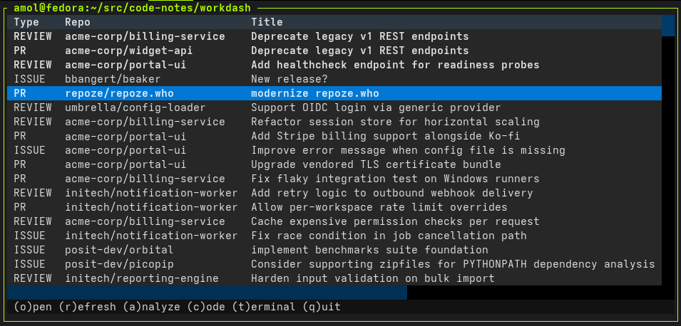
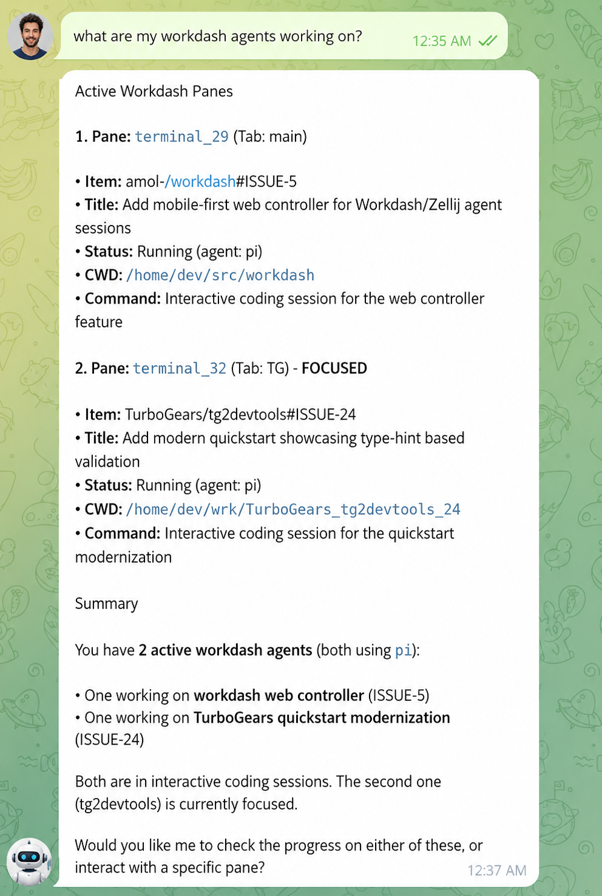
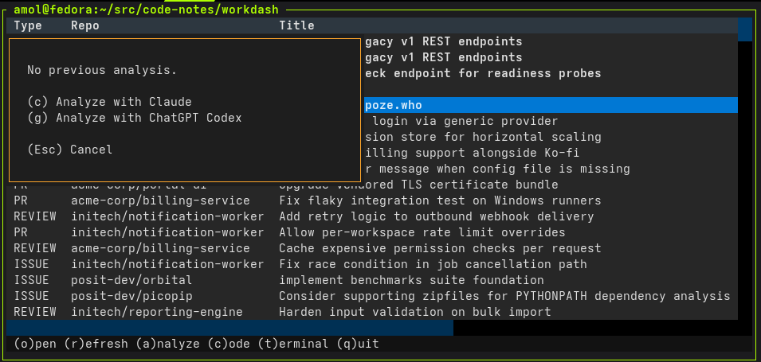
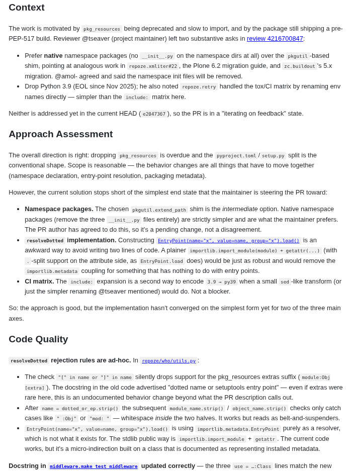
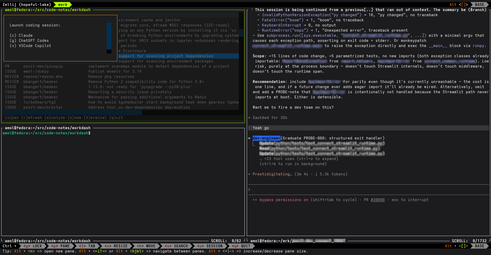
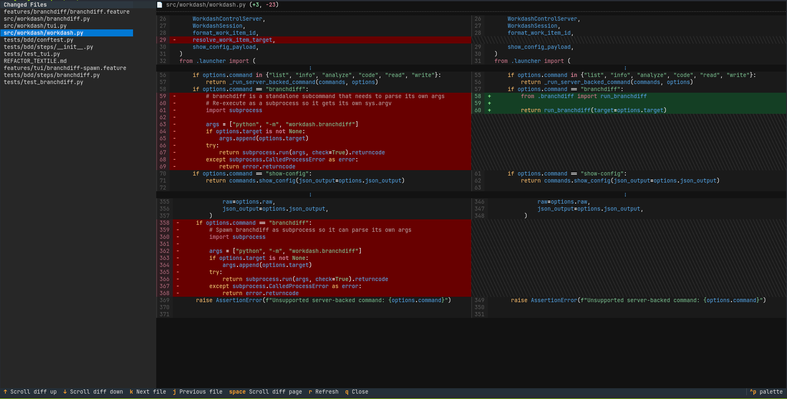
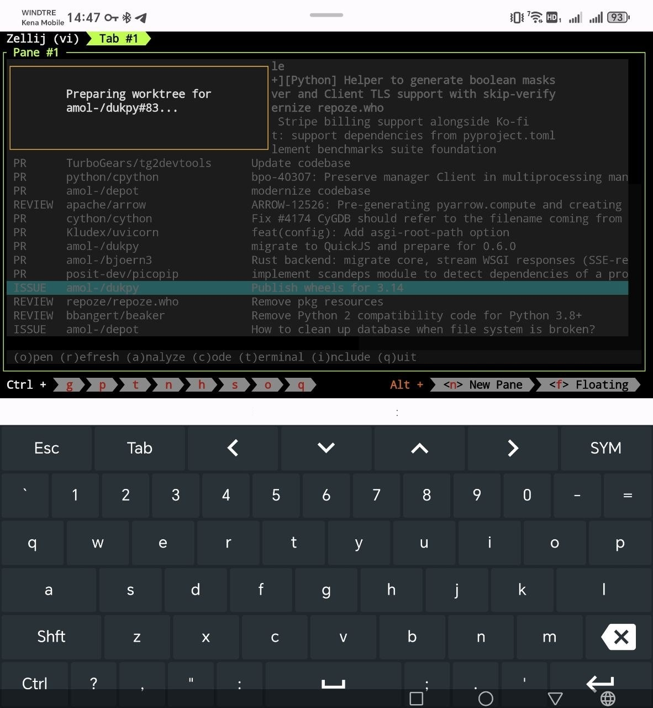

Text-based GitHub work triage dashboard. Pick what to work on next, then jump straight into a review, an AI analysis, or a full coding session in a dedicated worktree.

GitHub tells you what is waiting. Getting from there to an open
editor with the right branch, the right context, and a summary of
the thing you are about to touch is the part that eats the morning.
workdash compresses that into a single keystroke.
It pulls your authored PRs, review requests, assignments, and tracked issues into one list, suggests what to pick up next, and lets you launch an AI analysis or a full coding session in a dedicated git worktree — each keyed to the GitHub item so context never gets lost between sessions.
It also doubles as a local control plane for agent swarms, so your assistant agent can act as a control agent — reading the queue, requesting analyses, and launching coding sessions against your dashboard.
And it works on mobile too — access everywhere from a laptop, tablet, or phone.

Jump straight to the issue or pull request on GitHub.
Re-pull authored PRs, review requests, assignments, and tracked items.
Run Claude or Codex against the item, render the result as HTML,
and cache it — keyed by the GitHub updated_at so
stale entries invalidate themselves.
Prepare a dedicated git worktree and launch Claude, Codex, or VSCode Copilot inside it, preloaded with the item's context.
Drop into a terminal in the item's worktree, no agent attached.
Same triage, emitted as plain text for scripts, pipes, and agents that want the dashboard without the TUI.
workdash collapses the gap between
knowing what to work on and actually working on it.
Here is what that looks like for the common things you spend most of
your GitHub day on. Click any screenshot to zoom in.
Skip the "what is this PR even doing?" step and dive into a grounded review.


a.
The analyze dialog offers the cached result or a fresh
run with Claude or Codex.
o or c.
Jump to GitHub to leave comments, or drop into a worktree
with the PR checked out to actually run the code.
From a fresh bug report to an agent writing the fix — without leaving the terminal.

a.
Run Claude or Codex against the issue. The analysis is
rendered as HTML and cached so you can revisit it
instantly later.
c.
A git worktree is prepared for the issue and your agent
launches inside it, already primed with the cached
analysis as context.
Review the actual diff before you decide whether a PR needs your next reply, another commit, or a deeper review.

Notice which of your open PRs actually need attention today, without scrolling through a GitHub notifications list.
*, so you don't
re-decide every time.
Workdash is not just a human dashboard. On the same host, agents can
read the queue, inspect live Zellij panes, request analysis, and launch
coding sessions through commands whose --json output is
safe to parse.
Start here. The list command returns copy/paste item IDs that the other commands accept.
workdash list --json
{
"items": [
{
"id": "owner/repo#ISSUE-42",
"type": "ISSUE",
"title": "Fix failing deploy",
"suggested": true
}
]
}See which Workdash-owned Zellij panes already exist.
workdash info --json
{
"session": "workdash-a1b2c3d4",
"panes": [
{
"pane_id": "terminal_7",
"kind": "agent",
"item": "owner/repo#ISSUE-42"
}
]
}Ask a configured analysis agent for a cached or fresh briefing.
workdash analyze owner/repo#ISSUE-42 --json
{
"item_id": "owner/repo#ISSUE-42",
"status": "generated",
"path": "/home/me/wrk/.../analysis.md"
}Start a coding agent and get back the Zellij pane it created.
workdash code owner/repo#ISSUE-42 --agent codex --json
{
"item_id": "owner/repo#ISSUE-42",
"session": "workdash-a1b2c3d4",
"pane_id": "terminal_9",
"cwd": "/home/me/wrk/owner_repo_issue_42"
}
workdash runs where your development machine runs. Attach
through zellij remote or plain ssh, then keep
the same dashboard, worktrees, cached analyses, and agent launch
commands available from a laptop, tablet, or phone.

zellij remote to reconnect to the dashboard
without recreating tabs, panes, or in-progress coding sessions.
workdash over
ssh and keep the full triage loop close at hand.
With uv — one isolated
install, workdash on your PATH:
uv tool install workdashThen generate the configuration interactively:
workdash --configureLaunch the TUI:
workdashTo let an assistant agent drive your dashboard, start workdash with the localhost JSON control API:
workdash --serverThen copy the workdash skills into your control agent so it knows how to talk to the dashboard.
The control agent must have the workdash command
available and run on the same host as the workdash
server.
gh auth status must succeed)
(auto installed if missing).
ptyxis,
konsole, or
Ghostty.
xdg-open or open for links and rendered analyses.claude, codex,
code, pi.
Linux and macOS. Not tested on Windows.